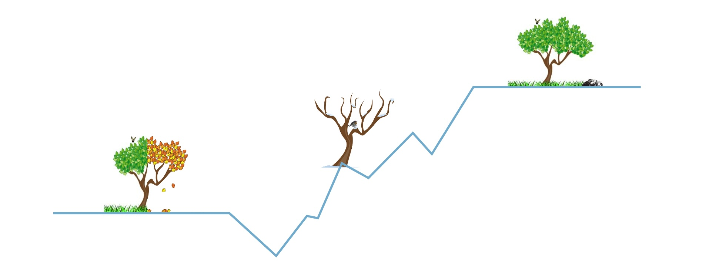

1. One central question
From what damages health to what strengthens it.
Scientist · Author · Director
Scientific Director at Buchinger Wilhelmi Clinics and Research Fellow at King's College London. Connecting mechanistic toxicology, clinical fasting, and nutrition science.

Scrollytelling
Scroll through eight steps tracing a continuous path from risk to resilience.

From what damages health to what strengthens it.
Long-term studies + omics uncovered hidden effects.
Real effects must be tested at formulation level.
Health emerges from host–microbe dialogue.
Polyphenols as biological signals, not just antioxidants.
A controlled transition from external to internal fuel.
From population evidence to individual guidance.
Understanding how health is damaged, restored, and sustained.
Career continuity
Early work in chemical toxicology established a robust mechanistic framework for exposure science.
Research expanded into microbiome and nutrition, linking environment, metabolism, and disease prevention.
Current clinical fasting programmes translate this evidence into practical patient care and policy dialogue.